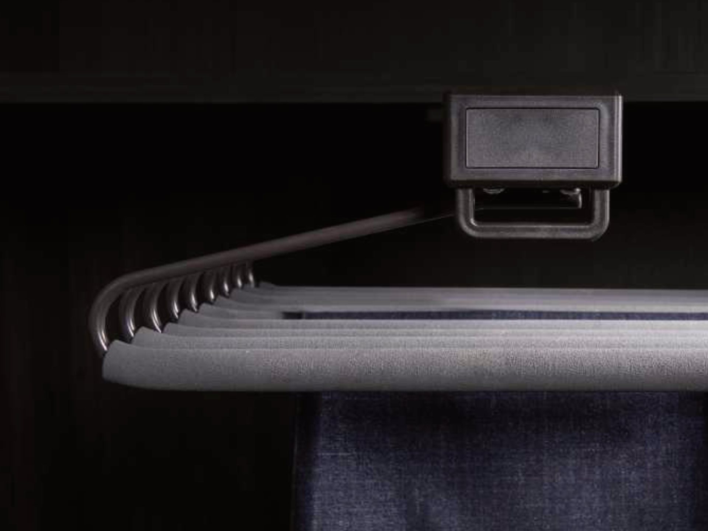
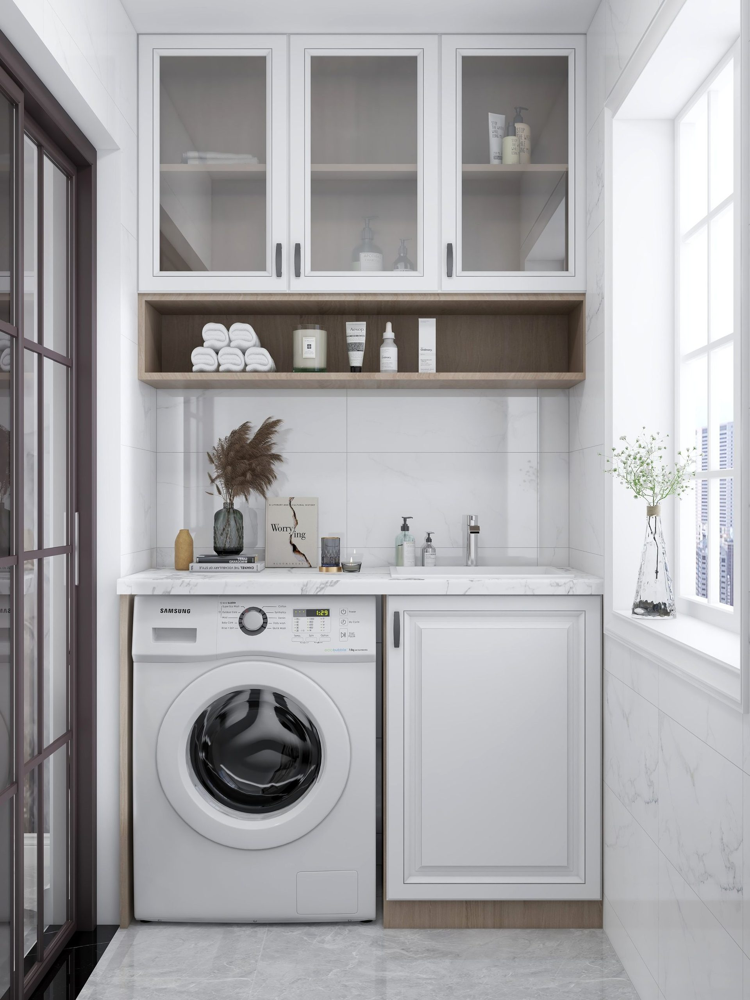
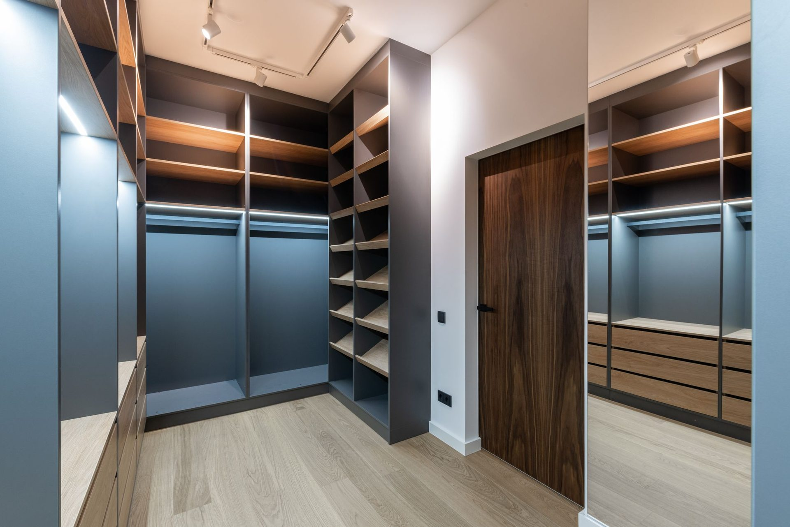
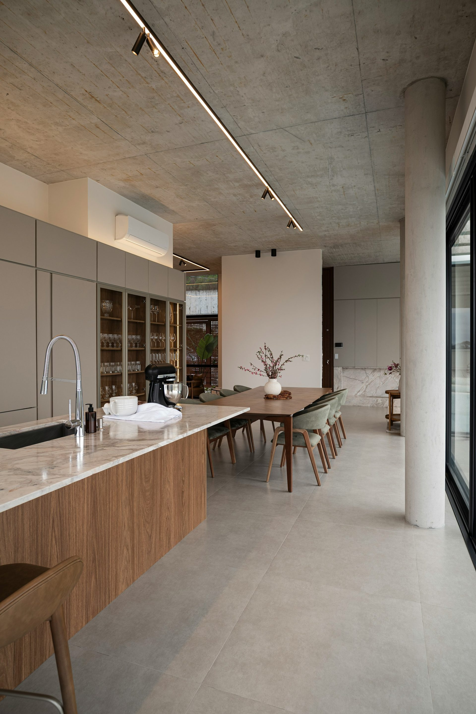
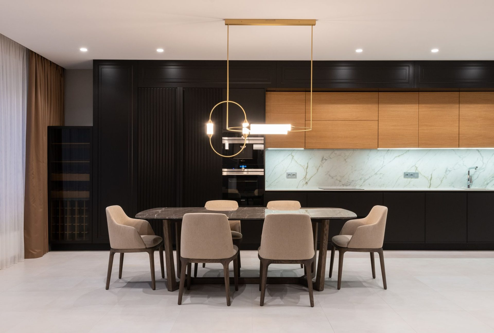

The high rail,
brought down to you.
The top half of a tall wardrobe is usually ceremonial. This is the fitting that makes it storage again.

What does a wardrobe lift rail do?
It is a hanging rail on a sprung or motorised arm. Pull the handle and the rail comes down and forward, bringing a full row of hanging clothes to chest height, then returns when you let go. It exists because the usable height of a wardrobe is about two metres and the available height is often three.
Manual or motorised?
Manual is a gas-strut or spring mechanism and it is the right answer for most robes: nothing to wire, nothing to fail, and it costs less. Motorised suits a very high rail, a heavy load, or anyone who cannot comfortably pull a loaded rail down. It needs power into the cabinet, which has to be on the plan before the carcass is built, not afterwards.
How much weight will it take?
The rated load is specified for the unit on your job and printed on your quote rather than guessed here. What matters more in practice is that the rail is only as good as what it is fixed to — a lift rail in a carcass that is not square, or not properly fixed to the wall, will not stay true however good the mechanism is.
Where it is worth it, and where it is not
Worth it in a robe over about 2.4 metres, in a room with high ceilings, and in any accessible fit-out, because it brings storage down rather than asking someone to go up. Not worth it in a standard-height robe, where the top shelf is reachable anyway and the mechanism costs you hanging depth for nothing.
How does it arrive?
Flat packed it arrives with the cabinet it belongs to and you fit it as you build that cabinet. Ordered delivered assembled, it is fitted and adjusted before the carton is closed.
Why this matters when you pick who builds it
None of this is exotic. It is the ordinary detail of specifying joinery properly, and the reason it is written down is that most quotes do not account for any of it. Someone who has not thought about the drop height on your rail, the clearance your drawer needs or where the mirror sits when it is open will still quote you a number — it will just be a number for a robe that works less well than it could have. We draw these decisions into the plan before anything is cut. That is what you are choosing when you choose who to buy from.
- Manual or motorised, specified per robe
- Comes down to about chest height
- Rated load stated on your quote
- Needs a square carcass, fixed to the wall
- Power on the plan if motorised
Also: the full wardrobe range · flat pack wardrobes · joinery
Frequently asked
Pull-down hanging rail — questions
If your question is not here, call the studio. We would rather talk it through than have you guess.
Ask us directly →What is a wardrobe lift rail?
A hanging rail on a sprung or motorised arm that pulls down and forward, bringing a full row of clothes from high in the robe to chest height.
Is a manual or motorised lift rail better?
Manual suits most robes — nothing to wire and less to fail. Motorised suits a very high rail, a heavy load, or anyone who cannot pull a loaded rail down comfortably.
Does a lift rail need power?
Only the motorised version, and it has to be on the plan before the carcass is built rather than added later.
When is a lift rail not worth it?
In a standard-height robe. The top shelf is already reachable and the mechanism costs you hanging depth for no gain.
In their words
The people who already
cook in one.
“For what we paid compared to what similar kitchens were costing elsewhere, we’re extremely happy with it.”
Rockhampton
“Could not be happier with our kitchen. The funny thing is, pretty much everyone who’s come over since we installed it has asked who did our kitchen and assumed we spent a lot more than we actually did.”
Gladstone
“Once we saw it in person, it was a pretty easy decision. It looked even better than we expected.”
Caboolture
Delivered assembled
The assembly is done
before it arrives.
Carcasses built square on a bench, Blum hardware fitted, doors hung and adjusted to even gaps. On site you are fixing finished cabinets to a wall, not building them on the floor. Our own team fits it in Central Queensland; your installer fits it anywhere else in Australia. Prefer to build it yourself? The same kitchen ships flat pack.

Laundry, delivered assembled

Walk-in robe drawers on Blum runners

Timber island, stone top

Pull-down hanging rail
Send us the dimensions.
We will send back a number.
A fixed, itemised quote with nothing hidden in it. If the number does not work for you, you owe us nothing and you keep the drawings.